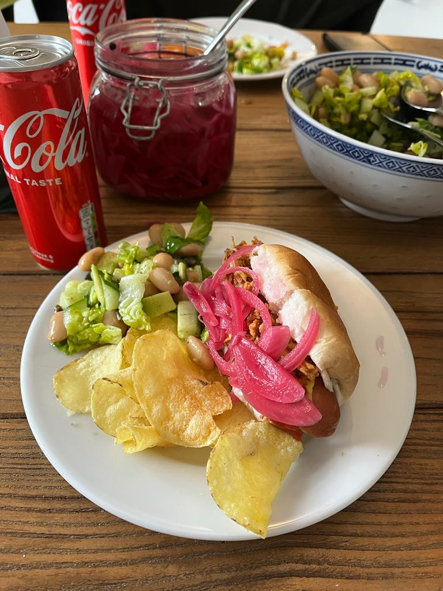

Hot dogs with crisps and bean salad

Story
So this recipe was born randomly. Gabi, Jules and myself were high one afternoon and we got hungry. We wanted something quick but we didn't know what. We walked to Albert Heijn and saw these premade hot dogs. Jules and Gabi were like "omg we can make our own from scratch". So we did. This is how we created this amazing recipe. Minimal cooking is required and it's dank as shit.
Ingredients
For the hot dogs
- A can of cheap hot dog sausages
- Hot dog buns
- Ketchup
- Mustard
- Bread and butter pickles
- Optional: pickled red onions (I might upload my recipe once)
- Crispy onions
- Salt and vinegar crisps
For the salad
- Baby romaine lettuce
- A can of canellini beans
- An avocado
- A cucumber
- Roasted pumpkin seeds
- White wine vinegar
- Extra virgin olive oil
- Lemon
Preparation
- Ok so we are starting by boiling some water in a pot. Once it boils whack the hot dogs in there and turn the heat down to low. Let it warm up there, no stress.
- While the sausages are getting warm, cut the romaine, dice the cucumber and the avocado and combine them in a bowl. Add a some drained and rinsed canellini beans and the roasted pumpkin seeds too.
- The salad is basically done. Dress it with some high quality extra virgin olive oil, white wine vinegar and lemon. Fucking delicious innit.
- Now we are putting everything together. Cut the buns in half, and put a hot sausage in the slot. Put some ketchup and mustard on the wiener then some crispy onions. Don't forget the pickles man, you are a philistine if you leave the pickles out. Every decent hot dog needs something briny sourness.
- Now plate up. Put the crisps the salad and a hot dog on a plate. You might even put the crisps in the hot dog. I don't care. I'm not your mother.
- Enjoy!